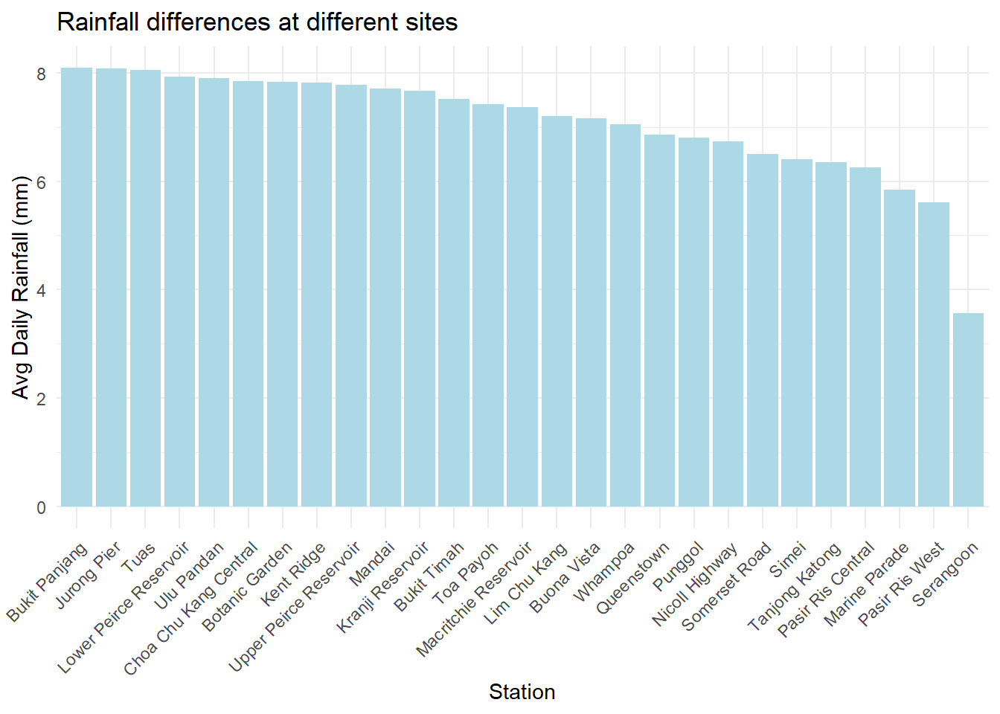
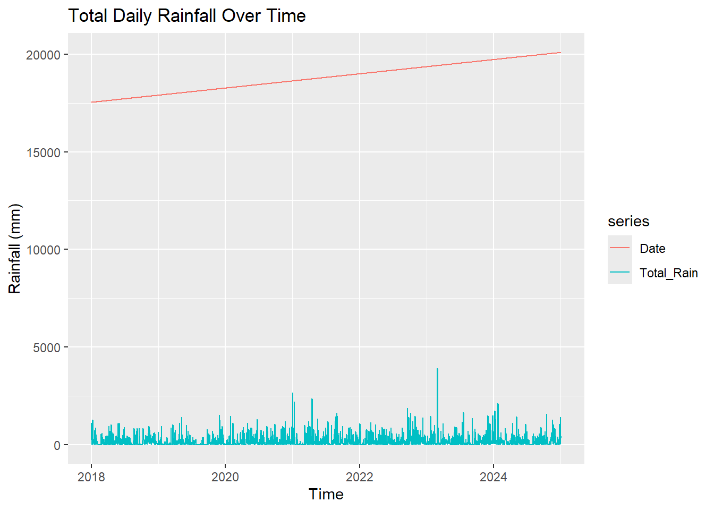

pacman::p_load(tidyverse, lubridate, SmartEDA,
ggplot2, DataExplorer, dplyr, ggmap,
ggstatsplot, ggpubr)1.Setup
1.1 Loading Packages
1.2 Loading Data
Due to the download method of the Singapore Meteorological Agency website, the relevant data for each location can only be downloaded on a monthly basis. However, our project requires downloading 86 files for 62 locations from 2018 to 2024, which means that one location needs to download 86 files. After Python processing, we merged them into one CSV file and named it weather_data
We will load the merged raw data weather_data.csv and the currently active station data (active_rainfall_stations.csv)
weather <- read.csv("data/weather_data.csv")
active_stations <- read.csv("data/active_rainfall_stations.csv")2. Cleaning Data and Descriptive analysis
We have to filter for active station–total 27 stations for next analysis.
# Remove () for consistent naming
weather$Station <- gsub("[()]", "", trimws(as.character(weather$Station)))
active_stations$Station.Name <- gsub("[()]", "", trimws(as.character(active_stations$Station.Name)))
# Filter for active stations
weather_active <- weather %>%
filter(Station %in% active_stations$Station.Name)
# Select relevant columns for EDA
weather_active <- weather_active %>%
select(
Station, Year, Month, Day,
Daily.Rainfall.Total..mm.,
Highest.30.Min.Rainfall..mm.,
Highest.60.Min.Rainfall..mm.,
Highest.120.Min.Rainfall..mm.,
) %>%
filter(!is.na(Daily.Rainfall.Total..mm.)) %>%
merge(active_stations, by.x = "Station", by.y = "Station.Name") %>%
select(
Station, Year, Month, Day,
Daily.Rainfall.Total..mm.,
Highest.30.Min.Rainfall..mm.,
Highest.60.Min.Rainfall..mm.,
Highest.120.Min.Rainfall..mm.,
Latitude, Longitude
) %>%
mutate(
Date = make_date(Year, Month, Day),
Station = as.factor(Station),
# Add Monsoon Season Label
Season = case_when(
Month %in% c(12, 1, 2) | (Month == 3 & Day <= 15) ~ "Northeast Monsoon",
(Month == 3 & Day > 15) | Month %in% c(4, 5) ~ "Inter-monsoon I",
Month %in% c(6, 7, 8, 9) ~ "Southwest Monsoon",
Month %in% c(10, 11) ~ "Inter-monsoon II",
TRUE ~ "Unknown"
),
Season = factor(Season, levels = c("Northeast Monsoon", "Inter-monsoon I", "Southwest Monsoon", "Inter-monsoon II"))
) %>%
arrange(Station, Date)# all variables EDA (descriptive statistical)
weather_active %>% ExpData(type = 1) Descriptions Value
1 Sample size (nrow) 64853
2 No. of variables (ncol) 12
3 No. of numeric/interger variables 9
4 No. of factor variables 2
5 No. of text variables 0
6 No. of logical variables 0
7 No. of identifier variables 0
8 No. of date variables 1
9 No. of zero variance variables (uniform) 0
10 %. of variables having complete cases 75% (9)
11 %. of variables having >0% and <50% missing cases 25% (3)
12 %. of variables having >=50% and <90% missing cases 0% (0)
13 %. of variables having >=90% missing cases 0% (0)weather_active %>% ExpData(type = 2) Index Variable_Name Variable_Type Sample_n Missing_Count
1 1 Station factor 64853 0
2 2 Year numeric 64853 0
3 3 Month numeric 64853 0
4 4 Day numeric 64853 0
5 5 Daily.Rainfall.Total..mm. numeric 64853 0
6 6 Highest.30.Min.Rainfall..mm. numeric 64506 347
7 7 Highest.60.Min.Rainfall..mm. numeric 64485 368
8 8 Highest.120.Min.Rainfall..mm. numeric 64485 368
9 9 Latitude numeric 64853 0
10 10 Longitude numeric 64853 0
11 11 Date Date 64853 0
12 12 Season factor 64853 0
Per_of_Missing No_of_distinct_values
1 0.000 27
2 0.000 7
3 0.000 12
4 0.000 31
5 0.000 679
6 0.005 346
7 0.006 450
8 0.006 542
9 0.000 27
10 0.000 27
11 0.000 2557
12 0.000 4We filtered historical weather data from active MSS rainfall stations and retained relevant columns for temporal rainfall analysis, including daily and extreme rainfall. We added a ‘Date’ column and labeled each record with a monsoon season based on the calendar month. Missing values in ‘Daily Rainfall’ were removed for analysis consistency.
3. Exploratory Data Analysis
3.1 Monthly trends
weather_active %>%
group_by(Year, Month) %>%
summarise(AvgRain = mean(Daily.Rainfall.Total..mm., na.rm = TRUE)) %>%
ggplot(aes(x = Month, y = AvgRain, group = Year, color = as.factor(Year))) +
geom_line() + geom_point() +
labs(title = "Monthly Average Rainfall", y = "Avg Rainfall (mm)", color = "Year") +
scale_x_continuous(breaks = 1:12) +
theme_minimal()3.2 Comparison of Rainfall in Various Monsoon Seasons
# the rainfall in all seasons
library(ggplot2)
ggplot(weather_active, aes(x = Season, y = Daily.Rainfall.Total..mm.)) +
geom_boxplot(fill = "skyblue") +
theme_minimal() +
labs(title = "Daily Rainfall across Monsoon Seasons", y = "Daily Rainfall (mm)")3.3 Seasonal distribution - average monthly rainfall
Check which months have the highest rainfall throughout the year and whether it is consistent with the monsoon cycle
weather_active %>%
group_by(Month) %>%
summarise(Avg_Rain = mean(Daily.Rainfall.Total..mm.)) %>%
ggplot(aes(x = Month, y = Avg_Rain)) +
geom_col(fill = "steelblue") +
labs(title = "Average Daily Rainfall by Month", x = "Month", y = "Avg Daily Rainfall (mm)") +
scale_x_continuous(breaks = 1:12) +
theme_minimal()
3.4 Annual trend - total annual rainfall
weather_active %>%
group_by(Year) %>%
summarise(Total_Rainfall = sum(Daily.Rainfall.Total..mm.)) %>%
ggplot(aes(x = Year, y = Total_Rainfall)) +
geom_line(group = 1, color = "lightblue", size = 1.2) +
geom_point(color = "lightgreen") +
labs(title = "Total Rainfall by Year", y = "Total Rainfall (mm)") +
scale_x_continuous(breaks = 2018:2024) +
theme_minimal()
3.5 Rainfall differences at different sites
Check which region has the most rainfall and whether there is any geographical deviation.
weather_active %>%
group_by(Station) %>%
summarise(Avg_Rain = mean(Daily.Rainfall.Total..mm.)) %>%
arrange(desc(Avg_Rain)) %>%
ggplot(aes(x = reorder(Station, -Avg_Rain), y = Avg_Rain)) +
geom_col(fill = "lightblue") +
labs(title = "Rainfall differences at different sites", x = "Station", y = "Avg Daily Rainfall (mm)") +
theme_minimal() +
theme(axis.text.x = element_text(angle = 45, hjust = 1))
3.6 Daily Rainfall Time Chart (Overall Trend)
This can help us see if there is a clear trend or extreme value
weather_active %>%
group_by(Date) %>%
summarise(Daily_Rainfall_Sum = sum(Daily.Rainfall.Total..mm.)) %>%
ggplot(aes(x = Date, y = Daily_Rainfall_Sum)) +
geom_line(color = "blue") +
labs(title = "Daily Rainfall over Time", y = "Total Daily Rainfall (mm)") +
theme_minimal()
3.7 Explore extreme rainfall events
We can check the distribution of days with rainfall greater than 100mm.
extreme_rain_years <- weather_active %>%
filter(Daily.Rainfall.Total..mm. > 100) %>%
count(Year)
ggplot(extreme_rain_years, aes(x = Year, y = n)) +
geom_col(fill = "pink") +
labs(title = "Extreme Rainfall Days (>100mm)", y = "Number of Days") +
scale_x_continuous(breaks = seq(min(extreme_rain_years$Year), max(extreme_rain_years$Year), by = 1)) +
theme_minimal()
3.8 Top 10 Station with Highest Extreme Rainfall Rate
# Proportion of Extreme Rain Days
weather_active %>%
mutate(ExtremeRain = Daily.Rainfall.Total..mm. > 100) %>%
group_by(Station) %>%
summarise(ExtremeRate = mean(ExtremeRain)) %>%
arrange(desc(ExtremeRate)) %>%
head(10) %>%
ggplot(aes(x = reorder(Station, -ExtremeRate), y = ExtremeRate)) +
geom_col(fill = "pink") +
labs(title = "Top 10 Stations with Highest Extreme Rainfall Rate", y = "Extreme Rainfall Rate") +
theme_minimal() +
coord_flip()
We conducted EDA to uncover key temporal and spatial rainfall trends in Singapore. Monthly and yearly rainfall summaries were visualized to observe seasonality and long-term changes. Station-wise comparisons revealed spatial heterogeneity, while time series plots allowed us to identify potential anomalies and extreme rainfall patterns.
3.9 Spatial Rainfall EDA
library(ggplot2)
library(ggmap)
library(ggrepel)
weather_active %>%
group_by(Station, Latitude, Longitude) %>%
summarise(Avg_Rain = mean(Daily.Rainfall.Total..mm.)) %>%
ggplot(aes(x = Longitude, y = Latitude, color = Avg_Rain)) +
geom_point(size = 3) +
scale_color_viridis_c() +
labs(title = "Average Daily Rainfall by Station Location", color = "Avg Rainfall (mm)") +
theme_minimal()3.10 Time series Plot
# Time Series Plot
library(forecast)
library(tsibble)
library(lubridate)
rain_ts <- weather_active %>%
group_by(Date) %>%
summarise(Total_Rain = sum(Daily.Rainfall.Total..mm., na.rm = TRUE)) %>%
ts(start = c(2018, 1), frequency = 365)
autoplot(rain_ts) +
labs(title = "Total Daily Rainfall Over Time", y = "Rainfall (mm)")
3.11 Monthly Rainfall by Monsoon Season
weather_active %>%
group_by(Season, Month) %>%
summarise(Avg_Rain = mean(Daily.Rainfall.Total..mm., na.rm = TRUE)) %>%
ggplot(aes(x = Month, y = Avg_Rain, fill = Season)) +
geom_col(position = "dodge") +
scale_x_continuous(breaks = 1:12) labs(title = "Monthly Rainfall by Monsoon Season")$title
[1] "Monthly Rainfall by Monsoon Season"
attr(,"class")
[1] "labels"This grouped bar chart reveals the monthly average daily rainfall categorized by monsoon seasons. We observe that rainfall tends to peak during the Northeast Monsoon (Dec–Jan) and the Inter-monsoon periods (Apr–May, Oct–Nov), while the Southwest Monsoon (Jun–Sep) exhibits relatively lower rainfall on average. These patterns align well with the seasonal transition periods and help in understanding Singapore’s bimodal rainfall distribution.
3.12 Monthly Average Rainfall Heatmap
monthly_avg_rain <- weather_active %>%
group_by(Year, Month) %>%
summarise(Avg_Rain = mean(Daily.Rainfall.Total..mm., na.rm = TRUE))
ggplot(monthly_avg_rain, aes(x = factor(Month), y = factor(Year), fill = Avg_Rain)) +
geom_tile(color = "white") +
geom_text(aes(label = round(Avg_Rain, 1)), size = 3, color = "black") +
scale_fill_viridis_c(option = "C", name = "Avg Rainfall (mm)") +
labs(
title = "Monthly Average Rainfall Heatmap",
x = "Month",
y = "Year"
) +
theme_minimal() +
theme(axis.text.x = element_text(angle = 45, hjust = 1))4. Confirmatory Data Analysis
write.csv(weather_active, "weather_active.csv", row.names = FALSE)4.1 Verify if there are significant differences between different Monsoon seasons
anova_result <- aov(Daily.Rainfall.Total..mm. ~ Season, data = weather_active)
summary(anova_result) Df Sum Sq Mean Sq F value Pr(>F)
Season 3 37148 12383 55.83 <2e-16 ***
Residuals 64849 14383138 222
---
Signif. codes: 0 '***' 0.001 '**' 0.01 '*' 0.05 '.' 0.1 ' ' 1TukeyHSD(anova_result) Tukey multiple comparisons of means
95% family-wise confidence level
Fit: aov(formula = Daily.Rainfall.Total..mm. ~ Season, data = weather_active)
$Season
diff lwr upr p adj
Inter-monsoon I-Northeast Monsoon 0.3643754 -0.06672501 0.7954758 0.1312325
Southwest Monsoon-Northeast Monsoon -0.7251748 -1.10644486 -0.3439048 0.0000061
Inter-monsoon II-Northeast Monsoon 1.5037046 1.04110295 1.9663062 0.0000000
Southwest Monsoon-Inter-monsoon I -1.0895502 -1.50796752 -0.6711330 0.0000000
Inter-monsoon II-Inter-monsoon I 1.1393292 0.64566283 1.6329955 0.0000000
Inter-monsoon II-Southwest Monsoon 2.2288794 1.77807379 2.6796850 0.0000000ggbetweenstats(
data = weather_active %>% filter(Year == 2021),
x = Season,
y = Daily.Rainfall.Total..mm.,
type = "p",
pairwise.comparisons = TRUE,
pairwise.display = "s",
output = "plot"
)library(ggplot2)
library(ggpubr)
library(dplyr)
summary_stats <- weather_active %>%
group_by(Season) %>%
summarise(
Mean_Rain = round(mean(Daily.Rainfall.Total..mm., na.rm = TRUE), 2),
Median_Rain = round(median(Daily.Rainfall.Total..mm., na.rm = TRUE), 2)
)
ggplot(weather_active, aes(x = Season, y = Daily.Rainfall.Total..mm., fill = Season)) +
geom_boxplot() +
stat_compare_means(method = "anova", label.y = 120) +
stat_compare_means(
method = "t.test",
comparisons = list(
c("Inter-monsoon II", "Southwest Monsoon"),
c("Southwest Monsoon", "Northeast Monsoon"),
c("Inter-monsoon II", "Inter-monsoon I")
),
label = "p.format"
) +
geom_text(
data = summary_stats,
aes(x = Season, y = 105, label = paste("Mean:", Mean_Rain)),
inherit.aes = FALSE,
color = "black",
size = 3.5
) +
geom_text(
data = summary_stats,
aes(x = Season, y = 95, label = paste("Median:", Median_Rain)),
inherit.aes = FALSE,
color = "darkblue",
size = 3.5
) +
labs(
title = "Comparison of Daily Rainfall across Monsoon Seasons",
y = "Daily Rainfall (mm)",
x = "Monsoon Season"
) +
theme_minimal() +
theme(legend.position = "none")4.2 Does Extreme Rainfall significantly increase in different years
Observe whether extreme rainfall (such as days>100mm) has increased in recent years.
extreme_days_by_year <- weather_active %>%
filter(Daily.Rainfall.Total..mm. > 100) %>%
count(Year)
model_poisson <- glm(n ~ Year, family = "poisson", data = extreme_days_by_year)
summary(model_poisson)
Call:
glm(formula = n ~ Year, family = "poisson", data = extreme_days_by_year)
Coefficients:
Estimate Std. Error z value Pr(>|z|)
(Intercept) -280.06152 80.61708 -3.474 0.000513 ***
Year 0.14012 0.03988 3.514 0.000442 ***
---
Signif. codes: 0 '***' 0.001 '**' 0.01 '*' 0.05 '.' 0.1 ' ' 1
(Dispersion parameter for poisson family taken to be 1)
Null deviance: 112.372 on 6 degrees of freedom
Residual deviance: 99.724 on 5 degrees of freedom
AIC: 136.28
Number of Fisher Scoring iterations: 5ggplot(extreme_days_by_year, aes(x = Year, y = n)) +
geom_point(size = 3, color = "darkred") +
geom_smooth(method = "glm", method.args = list(family = "poisson"),
se = TRUE, color = "steelblue") +
labs(title = "Poisson Regression: Extreme Rainfall Days by Year",
x = "Year", y = "Extreme Rainfall Days") +
theme_minimal()
A Poisson regression was performed to evaluate whether the number of extreme rainfall days (daily rainfall > 100mm) has increased over the years.
The analysis revealed a statistically significant positive association between year and the count of extreme rainfall days (β = 0.14, p < 0.001).
This suggests that the frequency of extreme rainfall events has been increasing in recent years.
4.3 Regional difference analysis (whether the rainfall in the southeast, northwest, and northwest is different)
weather_active <- weather_active %>%
mutate(MainRegion = case_when(
Station %in% c("Pasir Ris (West)", "Pasir Ris Central", "Simei", "Tanjong Katong", "Marine Parade") ~ "East",
Station %in% c("Punggol", "Serangoon") ~ "Northeast",
Station %in% c("Kranji Reservoir", "Mandai") ~ "North",
Station %in% c("Jurong Pier", "Tuas", "Bukit Panjang", "Choa Chu Kang (Central)", "Lim Chu Kang") ~ "West",
TRUE ~ "Central"
))anova_mainregion <- aov(Daily.Rainfall.Total..mm. ~ MainRegion, data = weather_active)
summary(anova_mainregion) Df Sum Sq Mean Sq F value Pr(>F)
MainRegion 4 20792 5198 23.41 <2e-16 ***
Residuals 64848 14399494 222
---
Signif. codes: 0 '***' 0.001 '**' 0.01 '*' 0.05 '.' 0.1 ' ' 1TukeyHSD(anova_mainregion) Tukey multiple comparisons of means
95% family-wise confidence level
Fit: aov(formula = Daily.Rainfall.Total..mm. ~ MainRegion, data = weather_active)
$MainRegion
diff lwr upr p adj
East-Central -1.0736654 -1.5316381 -0.6156928 0.0000000
North-Central 0.4067185 -0.2045632 1.0180001 0.3647933
Northeast-Central -1.3204749 -2.0449388 -0.5960109 0.0000066
West-Central 0.5729730 0.1125827 1.0333633 0.0061806
North-East 1.4803839 0.7785093 2.1822585 0.0000001
Northeast-East -0.2468095 -1.0491876 0.5555687 0.9184639
West-East 1.6466384 1.0713803 2.2218965 0.0000000
Northeast-North -1.7271933 -2.6259352 -0.8284515 0.0000016
West-North 0.1662545 -0.5372000 0.8697090 0.9676690
West-Northeast 1.8934478 1.0896873 2.6972084 0.0000000ggplot(weather_active, aes(x = MainRegion, y = Daily.Rainfall.Total..mm., fill = MainRegion)) +
geom_boxplot() +
stat_compare_means(method = "anova", label.y = 120) +
labs(title = "Daily Rainfall by Region", y = "Rainfall (mm)", x = "Region") +
theme_minimal()4.4 Linear Regression (Rainfall~Month)
Observe the overall trend of month vs rainfall
lm_month <- lm(Daily.Rainfall.Total..mm. ~ Month, data = weather_active)
summary(lm_month)
Call:
lm(formula = Daily.Rainfall.Total..mm. ~ Month, data = weather_active)
Residuals:
Min 1Q Median 3Q Max
-7.942 -7.237 -6.473 0.045 239.822
Coefficients:
Estimate Std. Error t value Pr(>|t|)
(Intercept) 6.25013 0.12514 49.946 <2e-16 ***
Month 0.14095 0.01698 8.301 <2e-16 ***
---
Signif. codes: 0 '***' 0.001 '**' 0.01 '*' 0.05 '.' 0.1 ' ' 1
Residual standard error: 14.9 on 64851 degrees of freedom
Multiple R-squared: 0.001061, Adjusted R-squared: 0.001046
F-statistic: 68.9 on 1 and 64851 DF, p-value: < 2.2e-16library(ggplot2)
ggplot(weather_active, aes(x = Month, y = Daily.Rainfall.Total..mm.)) +
geom_jitter(alpha = 0.2, color = "lightblue") +
geom_smooth(method = "lm", se = TRUE, color = "darkblue") +
labs(title = "Linear Trend of Rainfall by Month",
x = "Month", y = "Daily Rainfall (mm)") +
theme_minimal()Click here you can see the shiny app original version